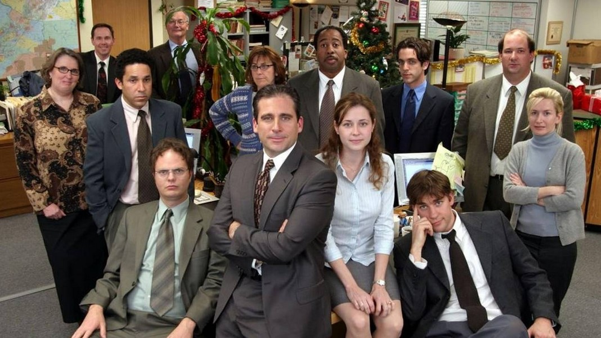
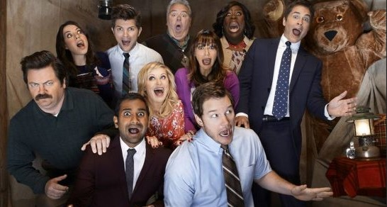

Quatro amigos solteiros, o comediante Jerry Seinfeld, o
atrapalhado George Constanza, a trabalhadora frustrada Elaine
Benes e o excêntrico vizinho Cosmo Kramer, lidam com os
absurdos da vida cotidiana em Nova York.

Esta adaptação americana se passa em uma empresa de papel em Scranton, Pensilvânia e tem um estilo de documentário semelhante ao original britânico estrelado por Ricky Gervais. Mostra a equipe da Dunder-Mifflin, que inclui personagens baseados no original britânico (e, provavelmente, em pessoas com quem você trabalha em seu escritório). Temos Jim, o simpático empregado que tem um pouco de todo homem. Jim sente uma atração pela recepcionista promovida a representante de vendas Pam (pois romances de escritório são sempre uma boa ideia). Temos também Dwight, o colega de trabalho bem-sucedido que carece de habilidades sociais e bom senso. E há ainda Ryan, ex-estagiário que trabalha temporariamente na matriz em Nova York antes de retornar a Scranton.

Leslie Knope, uma burocrata de nível médio no Departamento de Parques e Recreação de Indiana espera embelezar sua cidade (e impulsionar sua própria carreira) ajudando a enfermeira Ann Logan a transformar uma construção abandonada em um parque comunitário, mas o que deveria ser um projeto relativamente simples é frustrado o tempo todo por burocratas estúpidos, vizinhos egoístas, a burocracia governamental e um infinidade de outros desafios. O colega de Leslie, Tom Haverford, que explora sua posição para obter vantagens pessoais, pode tanto minar seus esforços como ajudá-la, enquanto seu chefe, Ron Swanson, é firmemente contra o governo em qualquer forma, apesar de ele próprio ser um burocrata.
